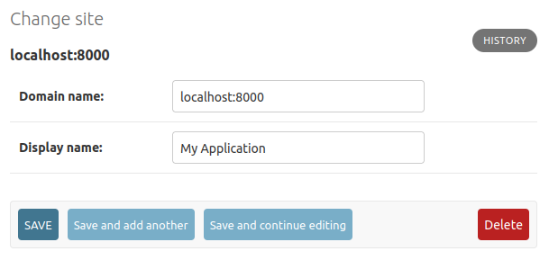
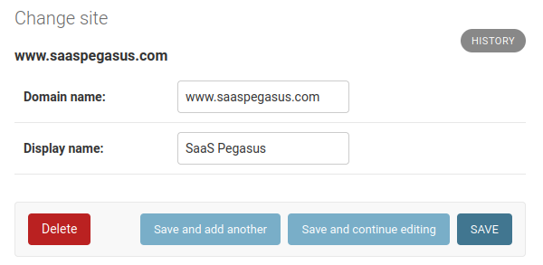

Settings and Configuration#
This section describes some of the settings and configuration details you can change inside Pegasus.
Settings and environment files#
Pegasus uses environment variables and django-environ to manage settings.
You can modify values directly in settings.py, but the recommended way to modify any setting
that varies across environments is to use a .env file.
Out-of-the-box, Pegasus will include multiple .env files for your settings:
.env is for a native Python environment.
It will be picked up by default if you run ./manage.py runserver.
It is typically not checked into source control (since it may include secrets like API keys),
so is included in the .gitignore.
.env.docker is for a Docker-based environment.
It will override anything set in .env if you run with docker.
It is also typically not checked into source control, so is ignored.
.env.example is an example file.
It is not used for anything, but can be checked into source control so that
developers can use it as a starting point for their .env or .env.docker files.
Newly downloaded projects will include a .env and .env.docker file, but projects
pulled from git will typically only include a .env.example file.
Note: Pegasus versions prior to 2023.1 may not include all of these files.
Settings environment precedence#
Most settings are configured in the form:
SOME_VALUE = env('SOME_VALUE', default='')
As mentioned above, it is recommended to set these values in your environment / .env file,
which will always work as expected.
The environment takes precedence over the default if it’s set—even if it is set to an empty value. This can lead to confusing behavior.
For example, if in your .env file you have this line:
SOME_VALUE=''
And in your settings.py you provide a default:
SOME_VALUE = env('SOME_VALUE', default='my value')
The default will be ignored, and SOME_VALUE will be an empty string.
To fix this, either remove the value entirely from your .env file,
or explicitly set the value in your settings.py (instead of using the default argument).
E.g.
SOME_VALUE = 'my value'
Project Metadata#
When you first setup Pegasus it populated the PROJECT_METADATA setting in settings.py with various
things like page titles and social sharing information.
These settings can later be changed as you like by editing the setting directly:
PROJECT_METADATA = {
'NAME': 'Your Project Name',
'URL': 'http://www.example.com',
'DESCRIPTION': 'My Amazing SaaS Application',
'IMAGE': 'https://upload.wikimedia.org/wikipedia/commons/2/20/PEO-pegasus_black.svg',
'KEYWORDS': 'SaaS, django',
'CONTACT_EMAIL': 'you@example.com',
}
See the project metadata documentation for more information about how this is used.
Absolute URLs#
In most of Django/Pegasus, URLs are relative, represented as paths like /account/login/ and so forth.
But in some cases you need a complete URL, including the protocol (http vs https) and server (e.g. www.example.com).
These are necessary whenever you use a link in an email, with an external site (e.g. Stripe API callbacks and social authentication),
and in some places when APIs are accessed from your front end.
Setting your site’s protocol#
The protocol is configured by the USE_HTTPS_IN_ABSOLUTE_URLS variable in settings.py.
You should set this to True when using https and False when not (typically only in development).
Setting your server URL#
When you first install Pegasus it will use the URL value from PROJECT_METADATA above to create
a Django Site object in your database.
The domain name of this Site will be used for your server address.
If you need to change the URL after installation, you can go to the site admin at admin/sites/site/ and
modify the values accordingly, leaving off any http/https prefix.
In development you’ll typically want a domain name of localhost:8000, and in production this should
be the domain where your users access your app.
Example Development Configuration

Example Production Configuration

Sending Email#
Pegasus is setup to use django-anymail to send email via Amazon SES, Mailgun, Postmark, and a variety of other email providers.
To use one of these email backends, change the the email backend in settings.py to:
EMAIL_BACKEND = 'anymail.backends.mailgun.EmailBackend'
And populate the ANYMAIL setting with the required information. For example, to use Mailgun
you’d populate the following values:
ANYMAIL = {
"MAILGUN_API_KEY": "key-****",
"MAILGUN_SENDER_DOMAIN": 'mg.{{project_name}}.com', # should match what's in mailgun
}
If you are in the EU you may also need to add the following entry:
'MAILGUN_API_URL': 'https://api.eu.mailgun.net/v3',
The anymail documentation has much more information on these options.
The following django settings should also be set:
SERVER_EMAIL = 'noreply@{{project_name}}.com'
DEFAULT_FROM_EMAIL = 'you@{{project_name}.com'
ADMINS = [('Your Name', 'you@{{project_name}}.com'),]
See Sending email in the django docs for more information.
User Sign Up#
The sign up workflow is managed by django-allauth with a sensible set of defaults and templates.
Requiring email confirmation#
Pegasus does not require users to confirm their email addresses prior to logging in.
However, this can be easily changed by changing the following value in settings.py
ACCOUNT_EMAIL_VERIFICATION = 'optional' # change to "mandatory" to require users to confirm email before signing in.
Note: The email verification step will be skipped if using a social login.
Customizing emails#
Pegasus ships with simple, responsive email templates for password reset and email address confirmation.
These templates can be further customized by editing the files in the templates/account/email directory.
See the allauth email documentation for more information about customizing account emails.
Disabling public sign ups#
If you’d like to prevent everyone from signing up for your app, set the following in your settings.py,
replacing the existing value:
ACCOUNT_ADAPTER = 'apps.users.adapter.NoNewUsersAccountAdapter'
This will prevent all users from creating new accounts, though existing users can continue to login and use the app.
Further configuration#
Allauth is highly configurable. It’s recommended that you look into the various configuration settings available within allauth for any advanced customization.
Stripe#
If you’re using Stripe to collect payments you’ll need to fill in the following in settings.py
(or populate them in the appropriate environment variables):
STRIPE_LIVE_PUBLIC_KEY = os.environ.get("STRIPE_LIVE_PUBLIC_KEY", "<your publishable key>")
STRIPE_LIVE_SECRET_KEY = os.environ.get("STRIPE_LIVE_SECRET_KEY", "<your secret key>")
STRIPE_TEST_PUBLIC_KEY = os.environ.get("STRIPE_TEST_PUBLIC_KEY", "<your publishable key>")
STRIPE_TEST_SECRET_KEY = os.environ.get("STRIPE_TEST_SECRET_KEY", "<your secret key>")
STRIPE_LIVE_MODE = False # Change to True in production
Google Analytics#
To enable Google Analytics, add your analytics tracking ID to your .env file or settings.py file:
GOOGLE_ANALYTICS_ID = 'UA-XXXXXXX-1'
Pegasus uses a “global site tag” with gtag.js by default, which is a simpler version of Google Analytics that can be rolled out
with zero additional configuration.
If you use Google Tag Manager, you can make changes in templates/web/components/google_analytics.html to
match the snippet provided by Google.
See this article for more on the differences between gtag.js and Google Tag Manager.
Sentry#
Sentry is the gold standard for tracking errors in Django applications and Pegasus can connect to it with a few lines of configuration.
If you build with Sentry enabled, all you need to do is populate the SENTRY_DSN setting - either
directly in your settings.py or via an environment variable.
After setting it up on production, you can test your Sentry integration by visiting https://<yourdomain>/simulate_error.
This should trigger an exception which will be logged by Sentry.
OpenAI#
To use the built-in OpenAI examples (version 2023.3.3 and later) you will need to set OPENAI_API_KEY in
your settings or environment.
See this page for help
finding your OpenAI API key.
Celery#
See the celery docs for set up and configuration of Celery.
Mailing List#
Pegasus includes support for subscribing users to a marketing email list upon signup. Currently, three platforms are supported:
Make sure you choose the platform you would like to use when building your Pegasus project.
Then follow the instructions below for the platform you’ve chosen. After completing these steps, new sign-ups will automatically be added to your configured marketing list. Note that it is your responsibility to notify your users / get their consent as per your local privacy regulations.
Mailchimp#
To enable the Mailchimp integration, first create a mailing list, then fill in the following to values in your environment/settings.
MAILCHIMP_API_KEY = '<Api Key>'
MAILCHIMP_LIST_ID = '<List ID>'
ConvertKit#
To enable the ConvertKit integration, first create a form, then fill in the following values in your environment/settings.
CONVERT_KIT_API_KEY = "<Api Key>"
CONVERT_KIT_FORM_ID = "<Form Id>"
Email Octopus#
To enable the Email Octopus integration, first create a mailing list, then fill in the following values in your environment/settings.
EMAIL_OCTOPUS_API_KEY = "<Api Key>"
EMAIL_OCTOPUS_LIST_ID = "<List ID>"
Logging#
Pegasus ships with a default Django log configuration which outputs logs to the console as follows:
Django log messages at level INFO and above
Pegasus log messages at level INFO and above
The Pegasus loggers are all namespaced with the project name e.g. {{project_name}}.subscriptions.
Changing log levels#
There are two environment variables which can be used to control the log levels of either Django messages or Pegasus message:
DJANGO_LOG_LEVEL{{project_name.upper()}}_LOG_LEVEL
Alternatively the entire log configuration can be overridden using the LOGGING setting as described in the
Django docs.
Storing media files#
SaaS Pegasus ships with optional configuration for storing dynamic media files in S3 e.g. user profile pictures. If you do not have this enabled the default Django configuration will be used which requires you to have persistent storage available for your site such as a Docker volume.
Setting up S3 media storage#
This section assumes you have set up your SaaS Pegasus project with the S3 media file storage enabled.
In order to use S3 for media storage you will need to create an S3 bucket and provide authentication credentials for writing data to the bucket.
Once you have done the S3 setup (see below), you can update your .env file as follows:
USE_S3_MEDIA=True
AWS_ACCESS_KEY_ID=<IAM user's access key>
AWS_SECRET_ACCESS_KEY=<IAM user's secret key>
With this configuration your media files will be accessible at
https://{{ project_name }}-media.s3.amazonaws.com/media/.
This guide is an excellent resource with step-by-step instructions for the S3 setup.
Additional settings#
AWS_STORAGE_BUCKET_NAME
: Name of the S3 bucket to use. Defaults to {{project_name}}-media.
AWS_S3_CUSTOM_DOMAIN
: Name of the AWS custom domain name. Defaults to {{project_name}}-media.
Alternative storage backends#
Should you wish to use a different storage backed e.g. Digital Ocean Spaces you can follow the setup described in the django-storages documentation.
Django Debug Toolbar#
Pegasus ships with Django Debug Toolbar as an optional package. This section describes how the feature is configured in Pegasus.
The django-debug-toolbar package is placed in the dev-requirements.txt file which means it will only
be available in dev environments. Should you wish to use it in a production environment you will need
to add it to your prod-requirements.in file and re-build your prod-requirements.txt file.
By default, the toolbar is enabled in development environments via the ENABLE_DEBUG_TOOLBAR setting
in your .env file(s). You can change this setting in any environment to turn it on/off.
ENABLE_DEBUG_TOOLBAR=True
Social logins#
Pegasus optionally ships with a “Login with Google” and “Login with Twitter” options.
You’ll separately need to follow the steps listed here to configure things on the Google/Twitter side and in the Django Admin.
It’s easy to add or change social login details (e.g. login with Facebook, Github, etc.) using allauth.
For details on how to set this up for a particular provider see this page.
If you need help setting this up feel free to get in touch!